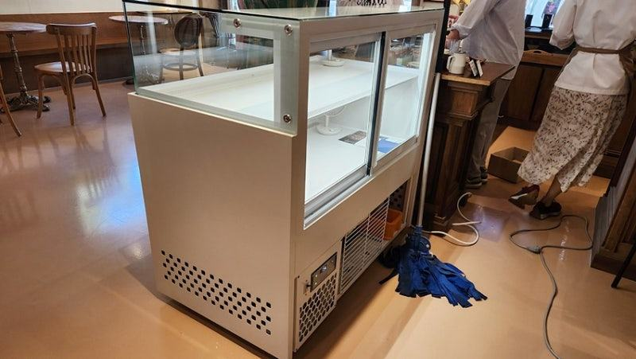
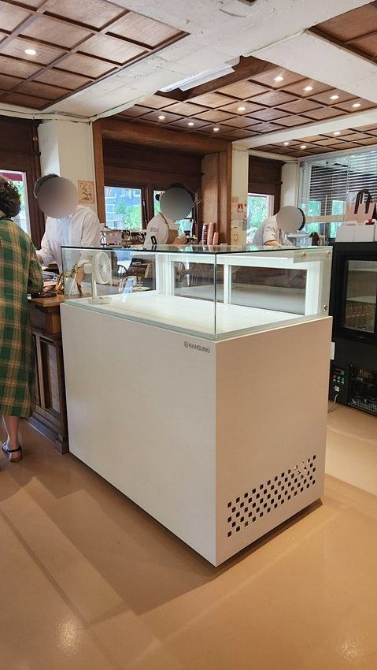

제과쇼케이스
제과쇼케이스 사이즈, 카운터 동선부터 재고 정하는 법

제과쇼케이스 사이즈는 매장에 들어갈 수 있는 최대 크기가 아니라 카운터 뒤 작업 공간과 손님 대기 줄을 남기고 남는 폭으로 정해야 합니다. 가로는 동선으로, 깊이는 직원 팔이 닿는 거리로, 높이와 단 수는 주력 디저트 높이로 정하면 됩니다.
안녕하세요. 카페와 베이커리 진열장을 매장 치수에 맞춰 제작하는 한성쇼케이스입니다.
디저트 카페를 준비하시는 사장님들이 상담 첫마디로 많이 하시는 말씀이 "자리가 좁아서 몇 센티까지 들어가는지 모르겠어요"입니다.
쇼케이스를 최대한 크게 넣고 싶은 마음과, 카운터 뒤가 너무 비좁아질까 걱정되는 마음이 동시에 드시는 거죠.
제과쇼케이스는 손님 쪽에서 보는 면과 직원이 꺼내는 면이 모두 중요한 장비라, 크기를 잘못 잡으면 진열은 예쁜데 일하기가 불편한 매장이 됩니다.
오늘은 제과쇼케이스 사이즈를 가로, 깊이, 높이 순서로 어떻게 정하면 되는지 매장 동선을 기준으로 정리해 드리겠습니다.
1. 가로는 카운터 동선으로 정합니다
제과쇼케이스는 대개 카운터 라인에 붙어 놓입니다. 가로 길이를 정할 때는 포스기와 커피 머신 자리, 픽업대, 직원이 드나드는 통로를 먼저 빼고 남는 폭을 쇼케이스에 배정하세요.
작은 매장이라면 900 정도의 짧은 규격으로 시작해 진열 단 수로 양을 채우는 방식이 많이 쓰입니다.
반대로 케이크 종류가 많은 매장은 가로를 늘려 한눈에 보이게 하는 편이 손님 고르는 시간을 줄여 줍니다.
- 포스기·머신·픽업대 자리를 먼저 표시하세요.
- 직원 두 명이 엇갈려 지나갈 폭을 남기세요.
- 손님 대기 줄이 쇼케이스 앞을 막지 않는지 보세요.
2. 깊이는 직원 팔이 닿는 거리로
깊이가 깊으면 한 단에 많이 진열할 수 있지만, 뒷문으로 맨 앞줄 케이크를 꺼낼 때 팔이 닿지 않아 집게질이 불편해집니다.
생크림 케이크처럼 쉽게 망가지는 디저트일수록 이 차이가 크게 느껴지죠.
카운터 뒤 작업 공간의 깊이도 함께 봐야 합니다. 쇼케이스 깊이를 늘리면 그만큼 직원 쪽 통로가 줄어듭니다.
실제로 서서 팔을 뻗어 보고, 쟁반을 들고 돌아설 수 있는 여유가 남는지 확인해 보세요.


3. 높이와 단 수는 디저트 높이로
홀케이크, 조각 케이크, 마카롱, 구움과자는 높이가 제각각입니다. 홀케이크가 주력이면 단 수를 줄이고 층고를 높게, 마카롱이나 낮은 타르트가 많으면 단 수를 늘려 진열 면을 넓히는 것이 기본입니다.
전체 높이는 손님 눈높이와 카운터 높이를 함께 봅니다. 너무 높으면 계산하는 직원과 손님이 서로 잘 보이지 않고, 너무 낮으면 위쪽 공간이 허전해 보입니다.
시그니처 디저트가 손님 시선이 처음 닿는 중간 단에 오도록 높이를 맞춰 보세요.
- 주력 디저트 3종의 높이를 재 두세요.
- 포장 상자에 담긴 상태로 진열할지도 정하세요.
4. 반입 경로와 설치 여유
치수가 정해졌다면 출입문 폭과 계단, 엘리베이터 크기를 확인해야 합니다. 유리가 많은 제과쇼케이스는 눕혀서 옮기기 어려운 경우가 있어 반입 경로가 크기를 제한하기도 합니다.
기계실 열이 빠져나갈 공간도 남겨 두세요. 벽이나 카운터 하부장에 꽉 끼워 넣으면 여름철 냉기가 약해질 수 있습니다.
인테리어 업체에 쇼케이스 치수를 넘길 때는 본체 크기만이 아니라 통풍 여유와 전용 콘센트 위치까지 함께 적어 주세요.
카운터 목공이 끝난 뒤에 치수가 어긋나면 고치기가 훨씬 번거롭습니다.
체크리스트
- 카운터 라인에서 쇼케이스에 배정할 가로 폭
- 뒷문에서 앞줄까지 팔이 닿는 깊이
- 주력 디저트 높이에 맞춘 단 수와 층고
- 출입문 폭과 반입 경로
- 기계실 열 배출 여유 공간
작은 디저트 카페에 맞춘 900 규격 제과쇼케이스
디저트 카페 오픈을 앞두고 매장에 꼭 맞는 크기와 디자인을 찾다가 문의를 주신 사장님 사례입니다. 매장 규모가 크지 않아 사이즈가 지나치게 크지 않은 제품을 원하셨고, 상담 끝에 900 규격 제과쇼케이스로 결정했습니다.
매장 인테리어가 우드와 화이트 톤이라 쇼케이스도 깔끔한 화이트 색상으로 맞췄습니다.
맞춤 제작에는 대략 2주에서 3주가 걸렸고, 119가지 품질 테스트를 거쳐 출고했습니다. 설치는 전문 기사님이 현장에 직접 방문해 진행했으며, 유리는 UV 접합으로 군더더기 없이 마감했습니다.


자주 묻는 질문
매장이 좁은데 작은 제과쇼케이스도 맞춤 제작이 되나요?
가능합니다. 협소한 공간에 맞춰 가로와 깊이를 조정해 제작하고, 단 수와 층고로 진열량을 보완합니다.
카운터 도면이나 실측 치수를 보내 주시면 들어갈 수 있는 크기를 먼저 확인해 드립니다.
제작 기간은 어느 정도 걸리나요?
사양과 주문 상황에 따라 다르지만, 이번 사례처럼 2주에서 3주 정도 걸리는 경우가 많습니다. 오픈 일정이 정해져 있다면 상담 단계에서 미리 말씀해 주세요.
설치 후 문제가 생기면 어떻게 하나요?
전국 240여 개 A/S 센터를 통해 사후 관리를 받으실 수 있습니다. 대표전화 031-986-2458로 접수하시면 됩니다.
매장 조건에 맞춰 만드는 한성쇼케이스
원하시는 제품 사진과 설치할 공간 사진만 보내 주셔도 매장에 맞는 구성을 추천해 드립니다.
- 전국 240여 개 A/S 전담 센터 운영
- 본사 대량 자재 매입으로 품질 대비 합리적인 가격
- 유럽제·삼성 냉각 콤프레셔 적용
- 국내 최초 쇼케이스 전문 디자이너 상주
매장 폭과 원하는 진열 구성을 알려 주세요. 실측과 견적을 안내해 드립니다.
031-986-2458